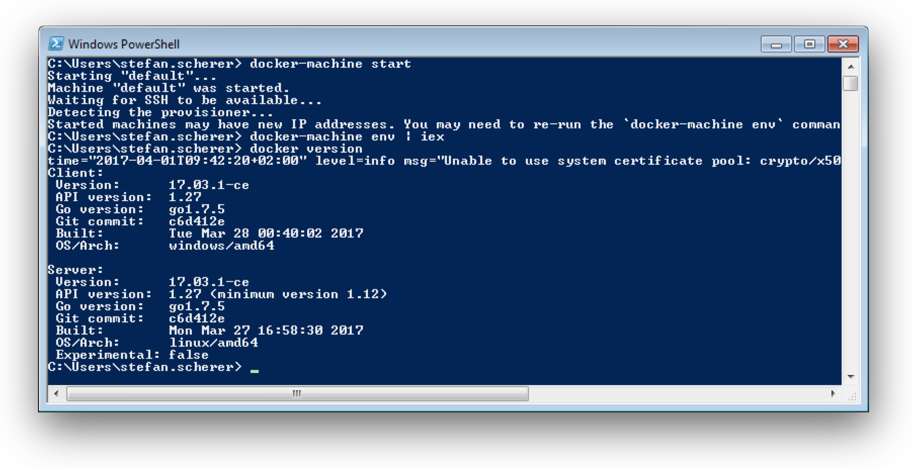

This week I was asked to help automating a task to get some Linux binaries and files packaged into a tarball. Some developers tried to spin up a Linux virtual machine and run a script to install tools and then do the packaging. Although I also like and use Vagrant still very often, it seemed to me using Docker will be easier to maintain as this could be done in a one-shot container.
The hard facts - Windows 7 Enterprise
The bigger problem was the fact that in some companies you still find Windows 7 Enterprise. It may be a delayed rollout of new notebooks that keep the employees on that old desktop platform.
So using Docker for Windows was no option as it only works with Windows 10 Pro with Hyper-V. This looks like a good setup for new notebooks, but if you want to use Docker now you have to look for other solutions.
Locked-in Hypervisor
Next obstacle was that for Vagrant it is better to use VMware Workstation on Windows 7 instead of VirtualBox. There also may be a company policy to use one specific hypervisor as the knowledge is already there using other server products in the datacenter.
So going down to the Docker Toolbox also was no option as it comes with VirtualBox to run the Linux boot2docker VM.
Can't Believe this..GOT THIS GIF from my Kid :) @docker ..Amazing ! pic.twitter.com/f09henl5Ta
— Ajeet Singh Raina (@ajeetsraina) 31. März 2017
Embrace your environment
So we went with a manual installation of some Docker tools to get a Linux Docker VM running on the Windows 7 machine. Luckily the developers already had the Chocolatey package manager installed.
Let's recap what I found on the notebooks
- Windows 7 Enterprise
- VMware Workstation 9/10/11/12
Well there is a tool Docker Machine to create local Docker VM's very easily, and there is a VMware Workstation plugin available. All these tools are also available as Chocolatey packages.
So what we did on the machines was installing three packages with these simple commands in an administrator terminal.
choco install -y docker
choco install -y docker-machine
choco install -y docker-machine-vmwareworkstation
Then we closed the administrator terminal as the next commands can be done in normal user mode.
My host is my castle
Every developer installs tools that they need for their work. Installing that on the host machine - your desktop or notebook - leads to different machines.
Creating the Docker Machine we ran into a "works on my machine, but doesn't work on your machine" problem I hadn't seen before.
Something while setting up the Linux VM just went wrong. It turned out that copying the Docker TLS certs with SSH just didn't work. A deeper look on what else is installed on the host we found that some implementations of SSH clients just doesn't work very well.
Luckily there is a less known option in the docker-machine binary to ignore external SSH client and use the built-in implementation.
With that knowledge we were able to create a VMware Docker Machine on that laptop with
docker-machine --native-ssh create -d vmwareworkstation default
Using the good old PowerShell on the Windows 7 notebook helps you to use that Linux Docker VM by setting some environment variables.
docker-machine env | iex
After that you can run docker version for example to retrieve client and server version which are both the up-to-date community editions

Quite exciting to be able to use that Windows 7 notebook with the latest Docker tools installed.
So hopefully Docker and using containers in more and more development tasks helps to keep their notebooks clean and they install less tools on the host and instead running more tools in containers.
I can C: a problem
Using that Docker Machine VM worked really well until we faced another problem. Building some Docker images we ran out of disk space. Oh no, although the Windows 7 notebooks got improved by installing a 1 TB SSD, the C: partition hasn't been increased for some historical reasons.

Docker Machine creates the Linux VM's in the current users home directory. This is a good idea, but having a 120 GB partition with only 7 GB left on C: we had to fix it. Taking a deep breath and embracing that environment, we came to the following solution.
We destroyed the Docker Machine again (because it's so easy) and also removed the .docker folder again to link it to a folder that resides on a bigger partition of the SSD.
docker-machine rm -f default
rm $env:USERPROFILE\.docker
mkdir D:\docker
cmd /c mklink /J $env:USERPROFILE\.docker D:\docker
Then we recreated the Docker Machine with the command from above and set the environment variables again.
docker-machine --native-ssh create -d vmwareworkstation default
docker-machine env | iex
And hurray - it worked. The VM with its disk resides on the bigger D: drive and we don't have to set any other global environment variables.
With that setup I made the developers happy. They could start using Docker without waiting for new hardware or asking their admins to resize or reformat their partitions.
We soon had a small Dockerfile and put the already existing provision scripts into an image. So we finished the task running a Linux container that can be thrown away more easily than a whole VM.
Daily work
To recap how to use this Docker Machine you normally do the following steps after booting your notebook.
docker-machine start
docker-machine env | iex
Then you can work with this default Linux Docker VM.
Planning your hardware update
The story ended well, but I recommended to think ahead and plan the next hardware update. So before they just get the new notebook generation they should think about which hypervisor they should use in the future.
Using Windows 10 Enterprise with the built-in Hyper-V would be easier. You can run native Windows containers with it and use Docker for Windows to switch between Linux and Windows containers. Using Vagrant with Hyper-V also gets better and better.
But if company policy still restricts you to use eg. VMware then you also can use the steps above to create a Linux Docker machine. You also cannot use Windows containers directly on Windows 10 machine as Hyper-V does not work in parallel with other hypervisors. In that case you might spin up a Windows Server 2016 VM using my Windows Docker Machine setup. With that you can easily switch between Linux and Windows containers using the docker-machine env command.
As always, please leave a comment if you have questions or improvements or want to share your thoughts. I love to hear about your enterprise setup and how to make Docker work on your developer's machines. You can follow me on Twitter @stefscherer.